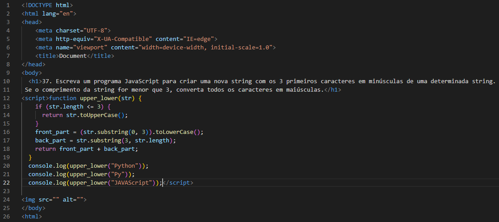

37. Escreva um programa JavaScript para criar uma nova string com os 3 primeiros caracteres em minúsculas de uma determinada string. Se o comprimento da string for menor que 3, converta todos os caracteres em maiúsculas.
